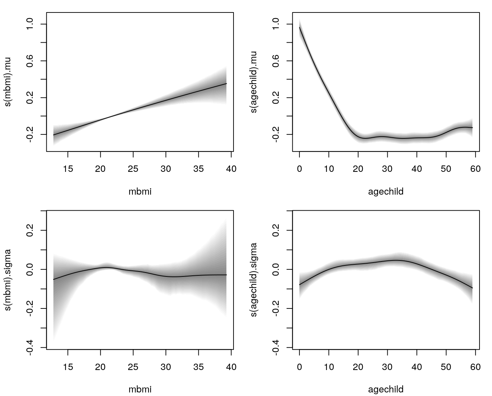
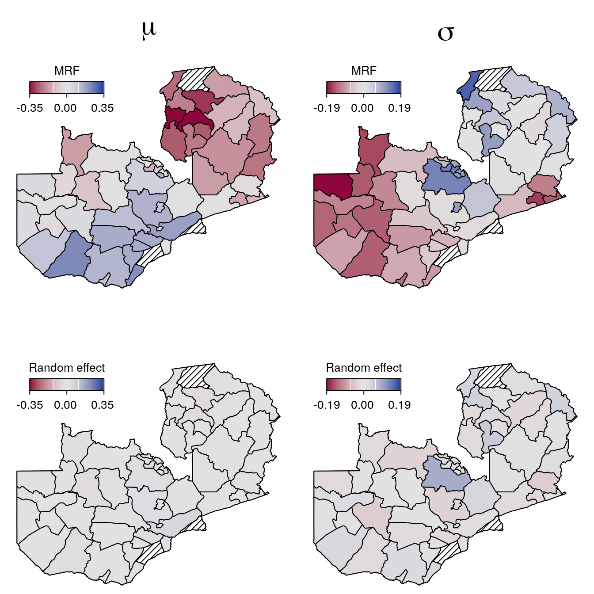

zn.RmdThis example is taken from the R2BayesX package (Umlauf et al. 2015) and is about undernutrition of new born children in Zambia. The data is loaded with
## stunting mbmi agechild district memployment meducation urban gender
## 1893 -0.6817840 22.33 29 12 yes no yes male
## 1894 -1.5876900 22.33 57 12 yes no yes female
## 1895 0.3110890 18.66 16 12 yes no yes female
## 1896 0.0067044 18.66 46 12 yes no yes male
## 1897 1.8765000 24.00 28 12 yes primary yes female
## 1898 0.1009190 24.22 9 12 yes primary yes maleHere, the primary interest is to model the dependence of stunting of newborn children, with an age ranging from 0 to 5 years, on covariates such as the body mass index of the mother, the age of the child and others. Moreover, we apply a full distributional regression model with \[
\texttt{stunting} \sim \mathcal{N}(\mu = \eta_{\mu}, \log(\sigma) = \eta_{\sigma})),
\] where the predictors \(\eta_{\mu}\) and \(\eta_{\sigma}\) are specified by the following formula
f <- list(
stunting ~ memployment + urban + gender + meducation +
s(mbmi) + s(agechild) + s(district, bs = "mrf", xt = list("penalty" = K)) +
s(district, bs = "re"),
sigma ~ memployment + urban + gender + meducation +
s(mbmi) + s(agechild) + s(district, bs = "mrf", xt = list("penalty" = K)) +
s(district, bs = "re")
)Note that for setting up the Markov random field smooth term a penalty matrix K needs to be provided. The penalty matrix forces penalization for neighboring regions of the districts in Zambia. To compute the K matrix, we need the spatial information about the regions in Zambia, which is shipped as a "bnd" object in the R2BayesX package and can be loaded with
The K matrix can then be computed using function neighbormatrix()
## 87 76 67 92 97 94 86 85 83 71 45 44 41 32 96 95 91 74 63 65 62 61 53 52 42
## 87 1 0 0 0 0 -1 0 0 0 0 0 0 0 0 0 0 0 0 0 0 0 0 0 0 0
## 76 0 3 0 0 0 0 0 -1 -1 -1 0 0 0 0 0 0 0 0 0 0 0 0 0 0 0
## 67 0 0 2 0 0 0 0 0 0 -1 -1 0 0 0 0 0 0 0 0 0 0 0 0 0 0
## 92 0 0 0 3 -1 -1 0 0 0 0 0 0 0 0 -1 0 0 0 0 0 0 0 0 0 0
## 97 0 0 0 -1 5 -1 0 0 0 0 0 0 0 0 -1 -1 -1 0 0 0 0 0 0 0 0
## 94 -1 0 0 -1 -1 6 -1 0 0 0 0 0 0 0 0 0 -1 -1 0 0 0 0 0 0 0
## 34 99 93 98 84 75 88 81 43 89 73 72 68 69 66 36 35 26 23 14 12 13 11 33 28
## 87 0 0 0 0 0 0 0 0 0 0 0 0 0 0 0 0 0 0 0 0 0 0 0 0 0
## 76 0 0 0 0 0 0 0 0 0 0 0 0 0 0 0 0 0 0 0 0 0 0 0 0 0
## 67 0 0 0 0 0 0 0 0 0 0 0 0 0 0 0 0 0 0 0 0 0 0 0 0 0
## 92 0 0 0 0 0 0 0 0 0 0 0 0 0 0 0 0 0 0 0 0 0 0 0 0 0
## 97 0 0 0 0 0 0 0 0 0 0 0 0 0 0 0 0 0 0 0 0 0 0 0 0 0
## 94 0 0 0 0 0 0 0 0 0 0 0 0 0 0 0 0 0 0 0 0 0 0 0 0 0
## 22 21 15 31 25 24 27
## 87 0 0 0 0 0 0 0
## 76 0 0 0 0 0 0 0
## 67 0 0 0 0 0 0 0
## 92 0 0 0 0 0 0 0
## 97 0 0 0 0 0 0 0
## 94 0 0 0 0 0 0 0## Also need to transform to factor for
## setting up the MRF smooth.
ZambiaNutrition$district <- as.factor(ZambiaNutrition$district)
## Now note that not all regions are observed,
## therefore we need to remove those regions
## from the penalty matrix
rn <- rownames(K)
lv <- levels(ZambiaNutrition$district)
i <- rn %in% lv
K <- K[i, i]Then, the model can be estimated with
and the estimated univariate effects are plotted with
 The plot indicates that only the effect of variable mbmi on the standard deviation is not significant according the 95% credible intervals and basically follows the zero horizontal line.
To visualize the structured and unstructured spatial effects we predict using the district information
## First, note that we have the structured id = 'mrf1' and unstructured
## spatial effect id = 're2', also indicated in the model summary
summary(b)##
## Call:
## bamlss(formula = f, family = "gaussian", data = ZambiaNutrition)
## ---
## Family: gaussian
## Link function: mu = identity, sigma = log
## *---
## Formula mu:
## ---
## stunting ~ memployment + urban + gender + meducation + s(mbmi) +
## s(agechild) + s(district, bs = "mrf", xt = list(penalty = K)) +
## s(district, bs = "re")
## -
## Parametric coefficients:
## Mean 2.5% 50% 97.5% parameters
## (Intercept) 0.112453 0.054741 0.112688 0.164649 0.111
## memploymentno -0.009098 -0.033846 -0.009121 0.017945 -0.010
## urbanno -0.088765 -0.133416 -0.089598 -0.046433 -0.090
## genderfemale 0.059348 0.034577 0.059318 0.083425 0.059
## meducationno -0.180022 -0.236665 -0.180923 -0.124206 -0.176
## meducationprimary -0.054656 -0.106017 -0.055213 -0.003093 -0.055
## -
## Acceptance probability:
## Mean 2.5% 50% 97.5%
## alpha 1 1 1 1
## -
## Smooth terms:
## Mean 2.5% 50% 97.5% parameters
## s(mbmi).tau21 2.084e-02 6.699e-05 1.876e-03 1.555e-01 0.000
## s(mbmi).alpha 1.000e+00 1.000e+00 1.000e+00 1.000e+00 NA
## s(mbmi).edf 1.371e+00 1.004e+00 1.101e+00 2.995e+00 0.968
## s(agechild).tau21 1.781e+00 3.113e-01 1.137e+00 7.115e+00 5.961
## s(agechild).alpha 1.000e+00 1.000e+00 1.000e+00 1.000e+00 NA
## s(agechild).edf 6.351e+00 4.844e+00 6.292e+00 8.056e+00 7.956
## s(district,id='mrf1').tau21 3.519e-03 9.780e-04 3.370e-03 6.699e-03 0.006
## s(district,id='mrf1').alpha 1.000e+00 1.000e+00 1.000e+00 1.000e+00 NA
## s(district,id='mrf1').edf 3.008e+01 1.814e+01 3.066e+01 3.737e+01 35.955
## s(district,id='re2').tau21 4.176e-03 6.933e-05 1.175e-03 2.426e-02 0.000
## s(district,id='re2').alpha 1.000e+00 1.000e+00 1.000e+00 1.000e+00 NA
## s(district,id='re2').edf 1.104e+01 4.409e-01 6.224e+00 3.601e+01 0.000
## ---
## Formula sigma:
## ---
## sigma ~ memployment + urban + gender + meducation + s(mbmi) +
## s(agechild) + s(district, bs = "mrf", xt = list(penalty = K)) +
## s(district, bs = "re")
## -
## Parametric coefficients:
## Mean 2.5% 50% 97.5% parameters
## (Intercept) -0.136367 -0.177225 -0.136755 -0.092489 -0.165
## memploymentno -0.015910 -0.038422 -0.015772 0.004915 -0.017
## urbanno 0.036322 -0.002975 0.035881 0.071793 0.022
## genderfemale 0.026088 0.006519 0.025961 0.047295 0.026
## meducationno 0.031518 -0.017891 0.031465 0.075792 0.032
## meducationprimary -0.030673 -0.073803 -0.029815 0.009465 -0.029
## -
## Acceptance probability:
## Mean 2.5% 50% 97.5%
## alpha 0.9278 0.6580 0.9852 1
## -
## Smooth terms:
## Mean 2.5% 50% 97.5% parameters
## s(mbmi).tau21 1.850e-01 8.480e-05 9.515e-03 1.154e+00 10.289
## s(mbmi).alpha 9.611e-01 7.032e-01 9.979e-01 1.000e+00 NA
## s(mbmi).edf 2.111e+00 1.007e+00 1.551e+00 5.379e+00 7.754
## s(agechild).tau21 9.199e-02 3.791e-03 3.750e-02 5.667e-01 0.018
## s(agechild).alpha 9.666e-01 8.027e-01 9.965e-01 1.000e+00 NA
## s(agechild).edf 3.394e+00 1.836e+00 3.218e+00 5.938e+00 2.691
## s(district,id='mrf1').tau21 1.548e-03 5.780e-04 1.437e-03 3.226e-03 0.000
## s(district,id='mrf1').alpha 7.536e-01 1.863e-01 8.365e-01 1.000e+00 NA
## s(district,id='mrf1').edf 2.588e+01 1.697e+01 2.607e+01 3.447e+01 0.001
## s(district,id='re2').tau21 4.062e-03 9.555e-05 3.259e-03 1.379e-02 0.017
## s(district,id='re2').alpha 8.480e-01 3.013e-01 9.636e-01 1.000e+00 NA
## s(district,id='re2').edf 1.737e+01 8.979e-01 1.755e+01 3.454e+01 36.606
## ---
## Sampler summary:
## -
## DIC = 12616.75 logLik = -6262.522 pd = 91.7017
## runtime = 150.96
## ---
## Optimizer summary:
## -
## AICc = 12617.72 edf = 103.9308 logLik = -6202.629
## logPost = -35164.45 nobs = 4847 runtime = 19.623## Now, to predict the spatial effects we set up new data.
nd <- data.frame("district" = unique(ZambiaNutrition$district))
## Predict for the structured spatial effects.
p_str <- predict(b, newdata = nd, term = "s(district,id='mrf1')", intercept = FALSE)
## And the unstructured spatial effect.
p_unstr <- predict(b, newdata = nd, term = "s(district,id='re2')", intercept = FALSE)Now, to visualize the effects we plot all maps using the same range for the color legends
r_mu <- range(c(p_str$mu, p_unstr$mu))
r_mu <- c(-1 * max(abs(r_mu)), max(abs(r_mu)))
r_sigma <- range(c(p_str$sigma, p_unstr$sigma))
r_sigma <- c(-1 * max(abs(r_sigma)), max(abs(r_sigma)))and plot the effects using a diverging color legend.
## MRF smooth effect.
plotmap(ZambiaBnd, x = p_str$mu, id = nd$district, color = diverge_hcl, range = r_mu,
main = expression(mu), shift = 0.1, title = "MRF", mdensity = 20)
plotmap(ZambiaBnd, x = p_str$sigma, id = nd$district, color = diverge_hcl, range = r_sigma,
main = expression(sigma), shift = 0.1, title = "MRF", mdensity = 20)
## Random effects.
plotmap(ZambiaBnd, x = p_unstr$mu, id = nd$district, color = diverge_hcl, range = r_mu,
shift = 0.1, title = "Random effect", mdensity = 20)
plotmap(ZambiaBnd, x = p_unstr$sigma, id = nd$district, color = diverge_hcl, range = r_sigma,
shift = 0.1, title = "Random effect", mdensity = 20) The maps clearly show that the unstructured spatial effect seems to very small, if existent at all when looking the 95% credible intervals:
## Again predict, but now additionally compute 95% credible intervals
## using function c95().
p_unstr <- predict(b, newdata = nd, term = "s(district,id='re2')", intercept = FALSE, FUN = c95)
## Test if all effects contain zero, i.e., are not significant
## according the 95% credible intervals.
all(p_unstr$mu[["2.5%"]] < 0 & p_unstr$mu[["97.5%"]] > 0)## [1] TRUE## [1] TRUEUmlauf, Nikolaus, Daniel Adler, Thomas Kneib, Stefan Lang, and Achim Zeileis. 2015. “Structured Additive Regression Models: An R Interface to BayesX.” Journal of Statistical Software 63 (1): 1–46. https://doi.org/10.18637/jss.v063.i21.
Umlauf, Nikolaus, Nadja Klein, Achim Zeileis, and Thorsten Simon. 2021. bamlss: Bayesian Additive Models for Location Scale and Shape (and Beyond). https://CRAN.R-project.org/package=bamlss.